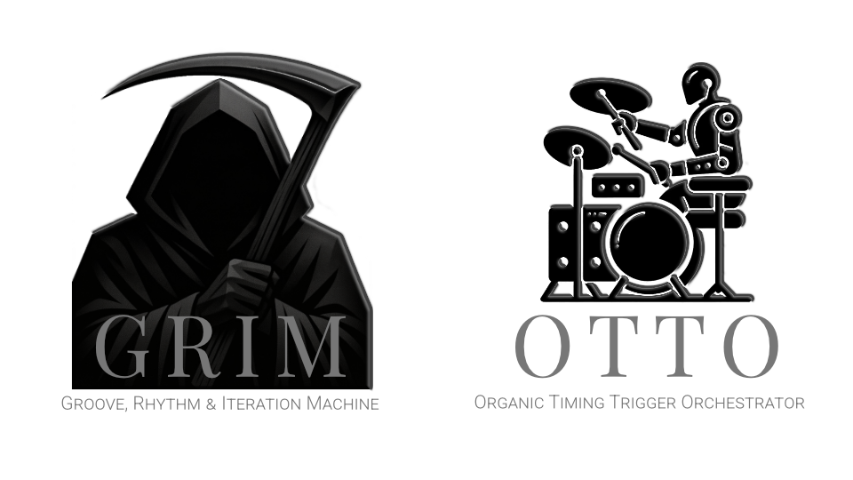
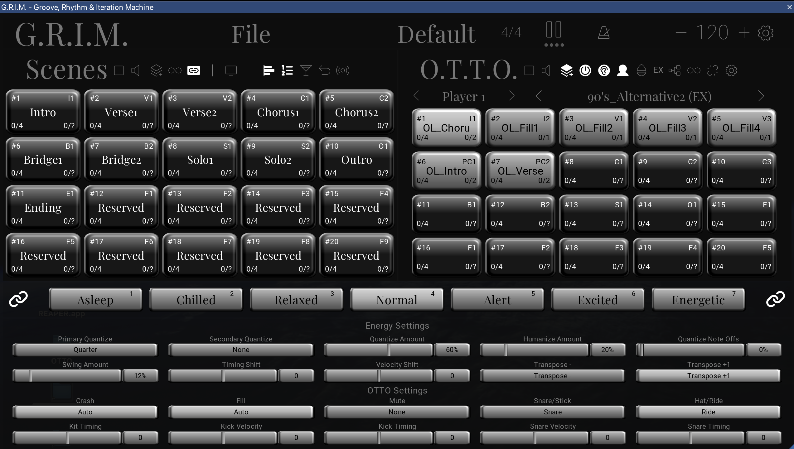

Active Development
GRIM
Scene-based Loop Station for REAPER. Professional live looping with the flexibility of software and the performance of dedicated hardware.
The Problem
Live loopers are either too simple or require dedicated hardware. GRIM brings professional-grade scene-based looping to REAPER, with the flexibility of software and the performance of dedicated hardware.
Key Features
- Scene-based loop organization - Organize your loops into scenes for structured performances
- Real-time recording and playback - Capture and play back loops with zero latency
- MIDI controller integration - Control everything from your favorite hardware
- Seamless REAPER integration - Works natively within your existing REAPER workflow
- Unlimited tracks per scene - No artificial limits on your creativity
- One-click scene transitions - Move between sections of your performance instantly
Screenshots

